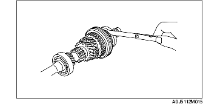

Primary shaft components preinspection
B3E051517201101
3rd Gear Thrust Clearance
1. Measure the clearance between 3rd gear and 2nd gear.

- • If it exceeds the maximum specification, inspect the contact surfaces of the 3rd gear, 2nd gear and 3rd/4th clutch hub. Replace worn and damaged parts.
4th Gear Thrust Clearance
1. Measure the clearance between 4th gear and the bearing.

- • If it exceeds the maximum specification, inspect the contact surfaces of the 4th gear, bearing, and 3rd/4th clutch hub. Replace worn and damaged parts.